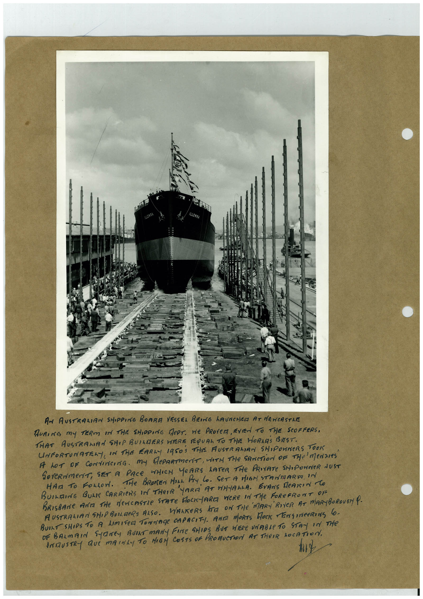

Book 1 · scan 031


Description
Transcription
Context
Review notes
Compare the machine draft with the scan. Handwriting and names need human review.
Artifacts
Edit the artifacts field in this note’s frontmatter to change these records. This summary is generated.
B01-S031-A01 — Photo & Handwritten note — Book 1, scan 031
Types: Photo, Handwritten note
Scope: Whole scanned page; individual items can be split out during review.
Caption: Not mapped yet.
Caption source: Not recorded yet.
Caption status: unmapped
Machine transcription
AN AUSTRALIAN SHIPPING BOARA VESSEL BEING hAUNCHEM AT dEWCASTRE DURING My TERM IN THE SHIPPING MePT. He PROVEM, EVEN TO THE SCOFFERS, THAT AUSTRAMIAN SHIP BUILDERS WERE EQUAL TO THE HORNES BEST. UNFORTUNATELY, IN THE EARLY 1950S THIS AUSTRALIAN SHIPONNERS TOOK A LOT oF CoNtiricing. My dePARTmeriT, WITH THe SANCTiOn OF THe meNares GOVeRNmeNT, SET A PACE WHICH YeARS LATER THe PRIVATE SHIPOWNER NUST HAT TO FOLLON. THe BROREN MILL PAY LO. SET A MIGN STAMMARE IN BUILDING BUL CARRiERS IN THEIR YARD AT FiNALLA. EVANS MeANIN TO BUILT SHIPS TO A LIMITED TONNAGe CAPACITY. ANTA MORTS ROCK ENGINeERINg 6. OF BARmAIN SANEy BUlAT mANY FINe SHIpS BUT WERe UNABLe TO STAy In THe ANIZUSTRY RUE MAINLY TO HIGM COSTS OF PROMUCTION AT THeIR hOCATION,